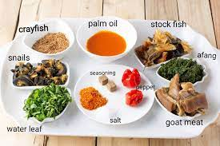
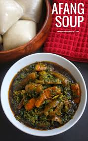
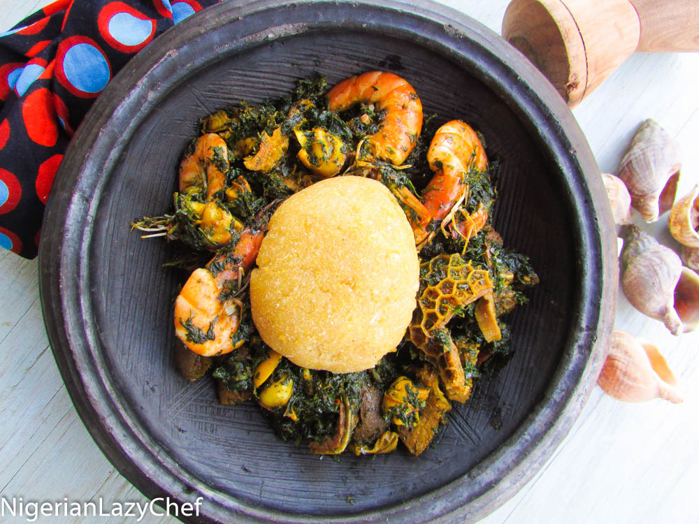

My Favourite Meal




| About Afang Soup | |
|---|---|
| Afang soup (not to be misconstrued for Okazi soup or Ukazi soup, a soup from the Igbo cuisine), is a vegetable soup that originates from the Efik people of the Efik kingdom in Cross River State and the Ibibio People of Akwa Ibom in Southern Nigeria. | |
| Ingredients Needed for Afang Soup | Measurement |
| sliced Okazi/Afang leaves | about 4 handfuls | 400g |
| Water leaves | 250g |
| red palm oil | 25cl |
| beef, pomo, dry-fish, stock fish | according to taste |
| ground crayfish | 2 tablespoons |
| pepper and salt | according to taste |
| stock cubes | 2 |
| Cooking Direction | |
| Boil the beef and Kanda with the diced onions and stock cubes in a very small quantity of water. When done, add the dry fish and cook for about 5 more minutes. | Now add the palm oil, crayfish and pepper. Once it starts boiling, add the afang (okazi) leaves, water leaves and periwinkle. When the okazi leaves have softened and the water has dried up a bit, add salt to taste and leave to simmer for about 5 minutes. The Afang soup is ready! |